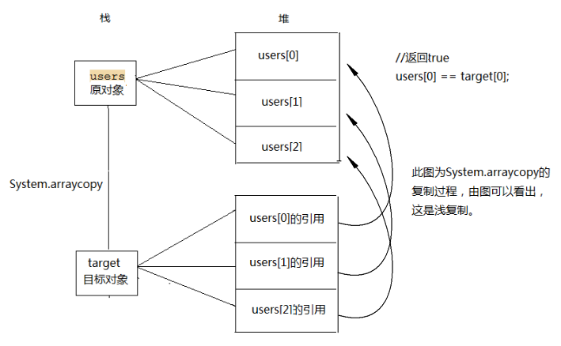

看 JDK 源码的时候，Java 开发设计者在对数组的复制时，通常都会使用 System.arraycopy() 方法。
其实对数组的复制，有四种方法：
- for
- clone
- System.arraycopy
- arrays.copyof
本文章主要分析 System.arraycopy() ，带着几个问题去看这个方法：
- 深复制，还是浅复制
- String 的一维数组和二维数组复制是否有区别
- 线程安全，还是不安全
- 高效还是低效
System.arraycopy() 的 API ：1
2
3
4
5
6
7public static void arraycopy(
Object src, //源数组
int srcPos, //源数组的起始位置
Object dest, //目标数组
int destPos, //目标数组的起始位置
int length //复制长度
)
1. 深复制还是浅复制
代码：对象数组的复制：1
2
3
4
5
6
7
8
9
10
11
12
13
14
15
16
17
18
19
20
21
22
23
24
25
26
27
28
29
30
31
32
33
34
35
36
37
38
39
40
41
42
43
44
45
46
47
48
49
50
51
52
53
54
55
56
57
58
59
60
61
62
63
64
65
66
67
68
69
70
71
72public class SystemArrayCopyTestCase {
public static void main(String[] args) {
User[] users = new User[] {
new User(1, "seven", "seven@qq.com"),
new User(2, "six", "six@qq.com"),
new User(3, "ben", "ben@qq.com") };// 初始化对象数组
User[] target = new User[users.length];// 新建一个目标对象数组
System.arraycopy(users, 0, target, 0, users.length);// 实现复制
System.out.println("源对象与目标对象的物理地址是否一样：" + (users[0] == target[0] ? "浅复制" : "深复制")); //浅复制
target[0].setEmail("admin@sina.com");
System.out.println("修改目标对象的属性值后源对象users：");
for (User user : users) {
System.out.println(user);
}
//
//
//
}
}
class User {
private Integer id;
private String username;
private String email;
// 无参构造函数
public User() {
}
// 有参的构造函数
public User(Integer id, String username, String email) {
super();
this.id = id;
this.username = username;
this.email = email;
}
public Integer getId() {
return id;
}
public void setId(Integer id) {
this.id = id;
}
public String getUsername() {
return username;
}
public void setUsername(String username) {
this.username = username;
}
public String getEmail() {
return email;
}
public void setEmail(String email) {
this.email = email;
}
public String toString() {
return "User [id=" + id + ", username=" + username + ", email=" + email + "]";
}
}
图示：对象复制的图示

所以，得出的结论是，System.arraycopy() 在拷贝数组的时候，采用的使用潜复制，复制结果是一维的引用变量传递给副本的一维数组，修改副本时，会影响原来的数组。
2. 一维数组和多维数组的复制的区别
代码：一维数组的复制1
2
3
4
5
6
7
8
9
10
11
12
13
14
15
16
17
18String[] st = {"A","B","C","D","E"};
String[] dt = new String[5];
System.arraycopy(st, 0, dt, 0, 5);
//改变dt的值
dt[3] = "M";
dt[4] = "V";
System.out.println("两个数组地址是否相同：" + (st == dt)); //false
for(String str : st){
System.out.print(" " + str +" "); // A B C D E
}
System.out.println();
for(String str : dt){
System.out.print(" " + str +" "); // A B C M V
}
使用该方法对一维数组在进行复制之后，目标数组修改不会影响原数据，这种复制属性值传递，修改副本不会影响原来的值。
但是，请重点看以下代码：1
2
3
4
5
6
7
8
9
10
11
12
13
14String[] st = {"A","B","C","D","E"};
String[] dt = new String[5];
System.arraycopy(st, 0, dt, 0, 5);
for(String str : st){
System.out.print(" " + str +" "); // A B C D E
}
System.out.println();
for(String str : dt){
System.out.print(" " + str +" "); // A B C D E
}
System.out.println("数组内对应位置的String地址是否相同:" + st[0] == dt[0]); // true
既然是属性值传递，为什么 st[0] == dt[0] 会相等呢? 我们再深入验证一下：1
2
3
4
5
6
7
8
9
10
11
12
13
14
15
16String[] st = {"A","B","C","D","E"};
String[] dt = new String[5];
System.arraycopy(st, 0, dt, 0, 5);
dt[0] = "F" ;
for(String str : st){
System.out.print(" " + str +" "); // A B C D E
}
System.out.println();
for(String str : dt){
System.out.print(" " + str +" "); // F B C D E
}
System.out.println("数组内对应位置的String地址是否相同:" + st[0] == dt[0]); // false
为什么会出现以上的情况呢？
通过以上两段代码可以推断，在System.arraycopy()进行复制的时候，首先检查了字符串常量池是否存在该字面量，一旦存在，则直接返回对应的内存地址，如不存在，则在内存中开辟空间保存对应的对象。
代码：二维数组的复制1
2
3
4
5
6
7
8
9
10
11
12
13
14
15
16
17
18
19
20
21
22
23
24
25
26
27
28
29
30
31
32
33
34
35
36
37
38
39
40
41String[][] s1 = {
{"A1","B1","C1","D1","E1"},
{"A2","B2","C2","D2","E2"},
{"A3","B3","C3","D3","E3"}
};
String[][] s2 = new String[s1.length][s1[0].length];
System.arraycopy(s1, 0, s2, 0, s2.length);
for(int i = 0;i < s1.length ;i++){
for(int j = 0; j< s1[0].length ;j++){
System.out.print(" " + s1[i][j] + " ");
}
System.out.println();
}
// A1 B1 C1 D1 E1
// A2 B2 C2 D2 E2
// A3 B3 C3 D3 E3
s2[0][0] = "V";
s2[0][1] = "X";
s2[0][2] = "Y";
s2[0][3] = "Z";
s2[0][4] = "U";
System.out.println("----修改值后----");
for(int i = 0;i < s1.length ;i++){
for(int j = 0; j< s1[0].length ;j++){
System.out.print(" " + s1[i][j] + " ");
}
System.out.println();
}
// Z Y X Z U
// A2 B2 C2 D2 E2
// A3 B3 C3 D3 E3
上述代码是对二维数组进行复制，数组的第一维装的是一个一维数组的引用，第二维里是元素数值。对二维数组进行复制后后，第一维的引用被复制给新数组的第一维，也就是两个数组的第一维都指向相同的“那些数组”。而这时改变其中任何一个数组的元素的值，其实都修改了“那些数组”的元素的值，所以原数组和新数组的元素值都一样了。
3. 线程安全，还是不安全
代码：多线程对数组进行复制 (java中System.arraycopy是线程安全的吗？ )
1 | public class ArrayCopyThreadSafe { |
这个例子的具体操作是:
- 1.arrayOriginal 和 arraySrc 初始化时是相同的, 而 arrayDist 是全为零的.
- 2.启动一个线程运行 copy() 方法来拷贝 arraySrc 到 arrayDist 中.
- 3.在主线程执行 modify() 操作, 修改 arraySrc 的内容. 为了确保 copy() 操作先于 modify() 操作, 我使用 Condition, 并且延时了两毫秒, 以此来保证执行拷贝操作(即System.arraycopy) 先于修改操作.
- 4.根据第三点, 如果 System.arraycopy 是线程安全的, 那么先执行拷贝操作, 再执行修改操作时, 不会影响复制结果, 因此 arrayOriginal 必然等于 arrayDist; 而如果 System.arraycopy 是线程不安全的, 那么 arrayOriginal 不等于 arrayDist.
根据上面的推理, 运行一下程序, 有如下输出:
1 | run count: 1 |
所以，System.arraycopy是不安全的。
4. 高效还是低效
代码：for vs System.arraycopy 复制数组
1 | String[] srcArray = new String[1000000]; |
通过以上代码，当测试数组的范围比较小的时候，两者相差的时间无几，当测试数组的长度达到百万级别，System.arraycopy的速度优势就开始体现了，根据对底层的理解，System.arraycopy是对内存直接进行复制，减少了for循环过程中的寻址时间，从而提高了效能。